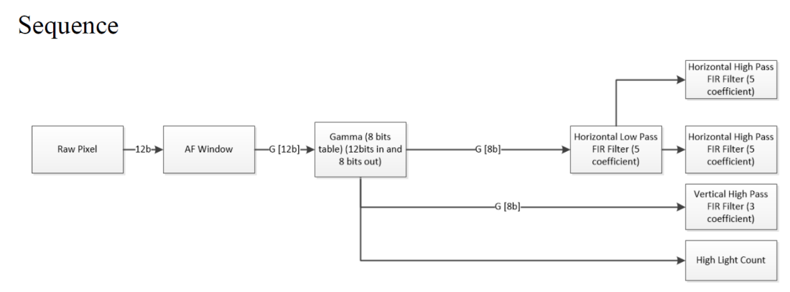
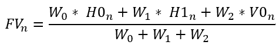
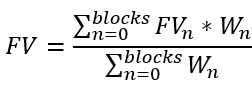

41. 3A 开发用户指南¶
41.1. AF统计信息使用说明¶
41.1.1. 概述¶
自动对焦是通过分析图像的特征得到目前图像清晰值FV(Focus Value), 由于图像越清晰FV越大, 因此经过比对每个位置的清晰值可以找出FV值曲线的最高点, 此位置即为对焦点, 找出对焦点后使用者即可控制对焦马达到最佳位置完成自动对焦。
目前AF共提供四个滤波器与亮度讯息, 分别为水平方向H1, H2, 垂直方向V1, 其中水平方向会先经过一个低通滤波器后再分别经过两个高通滤波器以得到H1,H2的值, 垂直方向则只经过高通滤波器,
目前AF只支持bayer域的统计信息
{kind=link}

41.1.2. 输入图像的裁剪¶
AF支持对输入图像的裁剪,
用户可通过stCrop中的X, Y, W, H来决定目前AF的统计区域,
详情可以参考 ISP_STATISTICS_CFG_S
以获得相关结构信息
41.1.3. Bayer域的配置¶
数据在进AF模块前有两样前处理可以使用
使用者可选择是否需要经过gamma, 假如需要的话, 需使能gamma并填入适当的gamma曲线
使用者可选择是否开启预滤波处理以消除椒盐噪声对于统计值的影响
41.1.4. 抑制光源对于FV值的影响¶
在图像中具有点光源的情况, 在对焦模糊时会因为光晕扩散影响到FV值, 而发生图像模糊FV值却增大的状况, 为了抑制此现象, 增加 u16HlCnt 来统计窗口中高亮度点的数值, 使用者可调整 u16HighLumaTh来决定高亮点的阈值, 当模糊时窗口中的亮点数量增加, 清晰时窗口中的亮点个数最少, 用户可使用此信息来判断最适合的对焦点
41.1.5. 统计信息配置注意事项¶
类型 |
描述 |
|---|---|
分块大小 |
最大 7 * 15 |
统计模块工作域 |
RAW |
Bayer统计参数是否减去黑电平 |
已减去 |
41.1.6. FV值的获取¶
当图像的最后一个pixel通过后即可取得统计信息,
使用者可通过 CVI_ISP_GetVDTimeOut 以同步获得统计值,
可参考33.1.8的流程
41.1.7. FV值的计算¶
一个block可取得的统计值有三种， 分别为 Horizontal第一组filter得到的H0， Horizontal第二组filter得到的H1， Vertical filter得到的V0， 我们将每个block的FV值命名为FVn， 为每个统计值设置自己的权重，分别为W0 / W1 / W2， 则FVn的值为

而最终的FV值还需要为每个block的FV加上权重，假设第n个block的weight为Wn，最终FV的值则为:

41.1.8. FV计算参考代码¶
ISP_AF_STATISTICS_S afStat;
CVI_U32 row, col;
CVI_S32 s32Ret = CVI_SUCCESS;
CVI_U64 stsValue = 0;
VI_PIPE ViPipe = 0;
ISP_VD_TYPE_E enIspVDType = ISP_VD_FE_START;
CVI_CHAR input[10];
ISP_STATISTICS_CFG_S stsCfg;
ISP_PUB_ATTR_S stPubAttr;
struct timeval t1, t2;
// AF weighting table
static int AFWeight[15][17] = {{1,1,1,1,1,1,1,1,1,1,1,1,1,1,1,1,1},
{1,2,2,2,2,2,2,2,2,2,2,2,2,2,2,2,1},
{1,2,2,2,2,2,2,2,2,2,2,2,2,2,2,2,1},
{1,2,2,2,2,2,2,2,2,2,2,2,2,2,2,2,1},
{1,2,2,2,2,2,2,2,2,2,2,2,2,2,2,2,1},
{1,2,2,2,2,2,2,2,2,2,2,2,2,2,2,2,1},
{1,2,2,2,2,2,2,2,2,2,2,2,2,2,2,2,1},
{1,2,2,2,2,2,2,2,2,2,2,2,2,2,2,2,1},
{1,2,2,2,2,2,2,2,2,2,2,2,2,2,2,2,1},
{1,2,2,2,2,2,2,2,2,2,2,2,2,2,2,2,1},
{1,2,2,2,2,2,2,2,2,2,2,2,2,2,2,2,1},
{1,2,2,2,2,2,2,2,2,2,2,2,2,2,2,2,1},
{1,2,2,2,2,2,2,2,2,2,2,2,2,2,2,2,1},
{1,2,2,2,2,2,2,2,2,2,2,2,2,2,2,2,1},
{1,1,1,1,1,1,1,1,1,1,1,1,1,1,1,1,1}};
// Get current statistic and related size setting.
s32Ret = CVI_ISP_GetStatisticsConfig(ViPipe, &stsCfg);
s32Ret |= CVI_ISP_GetPubAttr(ViPipe, &stPubAttr);
if (s32Ret != CVI_SUCCESS) {
CVI_TRACE_LOG(CVI_DBG_ERR, "Get Statistic info fail with %#x!\n", s32Ret);
return s32Ret;
}
// Config AF Enable.
stsCfg.stFocusCfg.stConfig.bEnable = 1;
// Config low pass filter.
stsCfg.stFocusCfg.stConfig.u8HFltShift = 0;
stsCfg.stFocusCfg.stConfig.s8HVFltLpCoeff[0] = 0;
stsCfg.stFocusCfg.stConfig.s8HVFltLpCoeff[1] = 1;
stsCfg.stFocusCfg.stConfig.s8HVFltLpCoeff[2] = 2;
stsCfg.stFocusCfg.stConfig.s8HVFltLpCoeff[3] = 3;
stsCfg.stFocusCfg.stConfig.s8HVFltLpCoeff[4] = 4;
// Config gamma enable.
stsCfg.stFocusCfg.stConfig.stRawCfg.PreGammaEn = 0;
// Config pre NR enable.
stsCfg.stFocusCfg.stConfig.stPreFltCfg.PreFltEn = 1;
// Config H & V window.
stsCfg.stFocusCfg.stConfig.u16Hwnd = 17;
stsCfg.stFocusCfg.stConfig.u16Vwnd = 15;
// Config crop related setting. Has some limitation
stsCfg.stFocusCfg.stConfig.stCrop.bEnable = 1;
stsCfg.stFocusCfg.stConfig.stCrop.u16X = 8;
stsCfg.stFocusCfg.stConfig.stCrop.u16Y = 2;
stsCfg.stFocusCfg.stConfig.stCrop.u16W = stPubAttr.stWndRect.u32Width - 8 * 2;
stsCfg.stFocusCfg.stConfig.stCrop.u16H = stPubAttr.stWndRect.u32Height - 2 * 2;
// Config first horizontal high pass filter.
stsCfg.stFocusCfg.stHParam_FIR0.s8HFltHpCoeff[0] = 0;
stsCfg.stFocusCfg.stHParam_FIR0.s8HFltHpCoeff[1] = -3;
stsCfg.stFocusCfg.stHParam_FIR0.s8HFltHpCoeff[2] = 0;
stsCfg.stFocusCfg.stHParam_FIR0.s8HFltHpCoeff[3] = -10;
stsCfg.stFocusCfg.stHParam_FIR0.s8HFltHpCoeff[4] = 0;
// Config 2nd horizontal high pass filter.
stsCfg.stFocusCfg.stHParam_FIR1.s8HFltHpCoeff[0] = 0;
stsCfg.stFocusCfg.stHParam_FIR1.s8HFltHpCoeff[1] = -3;
stsCfg.stFocusCfg.stHParam_FIR1.s8HFltHpCoeff[2] = 0;
stsCfg.stFocusCfg.stHParam_FIR1.s8HFltHpCoeff[3] = -10;
stsCfg.stFocusCfg.stHParam_FIR1.s8HFltHpCoeff[4] = 0;
// Config vertical high pass filter.
stsCfg.stFocusCfg.stVParam_FIR.s8VFltHpCoeff[0] = 8;
stsCfg.stFocusCfg.stVParam_FIR.s8VFltHpCoeff[1] = -15;
stsCfg.stFocusCfg.stVParam_FIR.s8VFltHpCoeff[2 ] = 0;
stsCfg.unKey.bit1FEAfStat = 1;
s32Ret = CVI_ISP_SetStatisticsConfig(ViPipe, &stsCfg);
if (s32Ret != CVI_SUCCESS) {
CVI_TRACE_LOG(CVI_DBG_ERR, "ISP Set Statistic failed with %#x!\n", s32Ret);
return s32Ret;
}
printf("select. c -> Fv curve\n");
printf("........ h0 -> print h0 blocks statistic\n");
printf("........ h1 -> print h1 blocks statistic\n");
printf("........ v0 -> print v0 blocks statistic\n");
printf("........ hlc -> print hlcnt blocks statistic\n");
scanf("%s", input);
while(1) {
// Wait VD start for get focus statistic data.
s32Ret = CVI_ISP_GetVDTimeOut(ViPipe, enIspVDType, 5000);
s32Ret |= CVI_ISP_GetFocusStatistics(ViPipe, &afStat);
if (s32Ret != CVI_SUCCESS) {
CVI_TRACE_LOG(CVI_DBG_ERR, "Get Statistic failed with %#x\n", s32Ret);
return CVI_FAILURE;
}
// print each focus statistic.
if (strncmp(input, "c", 1) != 0) {
for (row = 0; row < AF_ZONE_ROW; row++) {
for (col = 0; col < AF_ZONE_COLUMN; col++) {
if (strncmp(input, "h0", 2) == 0) {
stsValue = afStat.stFEAFStat.stZoneMetrics[row][col].u64h0;
} else if (strncmp(input, "h1", 2) == 0) {
stsValue = afStat.stFEAFStat.stZoneMetrics[row][col].u64h1;
} else if (strncmp(input, "v0", 2) == 0) {
stsValue = afStat.stFEAFStat.stZoneMetrics[row][col].u32v0;
} else {
stsValue = afStat.stFEAFStat.stZoneMetrics[row][col].u16HlCnt;
}
printf("%d ", stsValue);
}
printf("\n");
}
continue;
}
CVI_U64 FVn = 0, FV = 0;
CVI_U32 totalWeightSum = 0;
// weight for each statistic
const CVI_U32 weight1 = 1, weight2 = 1, weight3 = 1;
const CVI_U32 blockWeightSum = weight1 + weight2 + weight3;
// calculate AF statistics
for (row = 0; row < AF_ZONE_ROW; row++) {
for (col = 0; col < AF_ZONE_COLUMN; col++) {
CVI_U64 h0 = afStat.stFEAFStat.stZoneMetrics[row][col].u64h0;
CVI_U64 h1 = afStat.stFEAFStat.stZoneMetrics[row][col].u64h1;
CVI_U32 v0 = afStat.stFEAFStat.stZoneMetrics[row][col].u32v0;
FVn = (weight1 * h0 + weight2 * h1 + weight3 * v0) / blockWeightSum;
FV += FVn * AFWeight[row][col];
totalWeightSum += AFWeight[row][col];
}
}
FV = FV / totalWeightSum;
}
return CVI_SUCCESS;